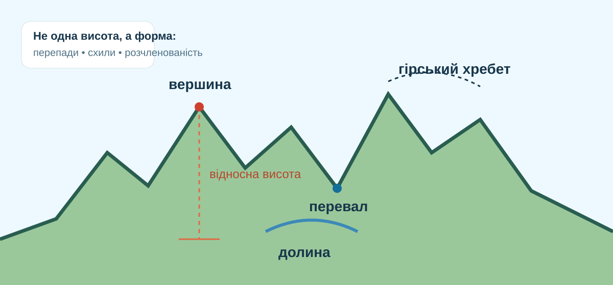

Гори
Великі, сильно розчленовані підняття земної поверхні зі значними відносними висотами та крутими схилами.
Чому висока територія не завжди є горами — і як за картою, профілем та геоданими довести, що перед нами справжня гірська система?

Яка ознака найкраще відрізняє гірську країну від високого плоскогір’я?
Порівняйте масштаб, форму вершин і характер схилів.


Натискайте терміни й знаходьте їх на профілі.

Шкільна схема: низькі — до 1000 м; середньовисотні — 1000–2000 м; високі — понад 2000 м.
Збільште масштаб. Знайдіть сусідні вершини, долини та лінії доріг/стежок. Чому маршрут до вершини не може йти «прямою»?
З’єднайте процес із найкращим прикладом.
Територія лежить на висоті 2300–2600 м, але її поверхня на десятки кілометрів майже рівна, а перепади між сусідніми точками невеликі. Учень назвав її «високими горами».
Під час перегляду випишіть два механізми горотворення і по одному доказу для кожного.
Після роботи з даними збираємо визначення.
Великі, сильно розчленовані підняття земної поверхні зі значними відносними висотами та крутими схилами.
Вершина, схил, підошва, хребет, перевал, міжгірна долина.
Низькі — до 1000 м; середньовисотні — 1000–2000 м; високі — понад 2000 м.
Складчасті, складчасто-брилові, брилові та вулканічні форми виникають різними геологічними механізмами.
Питання: чому Гімалаї — гірська система, а Тибетське нагір’я не можна визначити як «просто гори» лише через велику висоту?
§21. На фізичній карті знайдіть Гімалаї, Карпати й Кримські гори. Для кожної системи запишіть: 1) найвищу/характерну вершину; 2) категорію за висотою; 3) один доказ із фізичної карти, що це саме гірський рельєф.
Спочатку введіть ім’я, прізвище та клас.